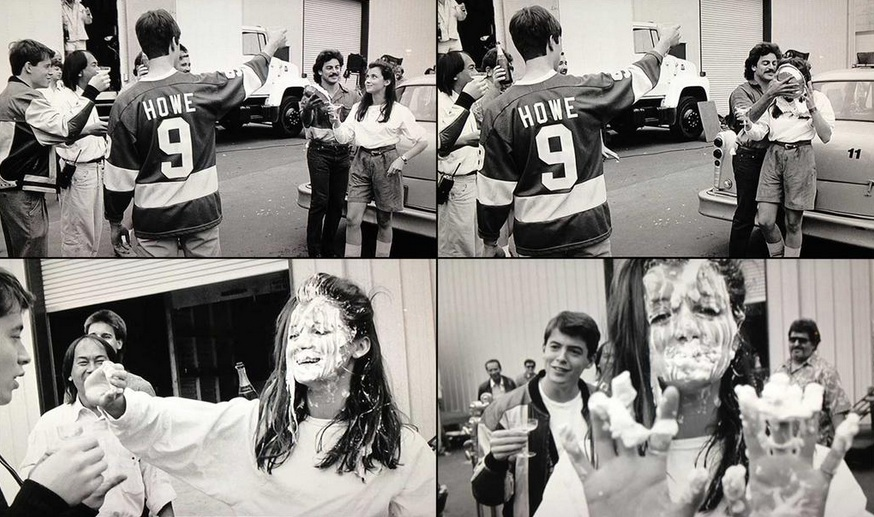
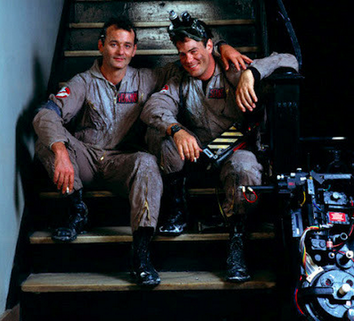
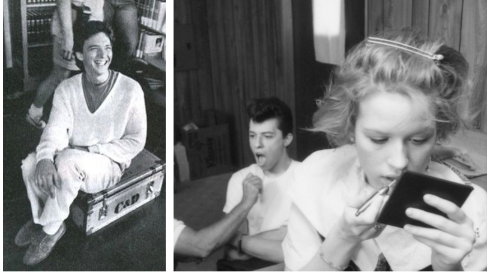
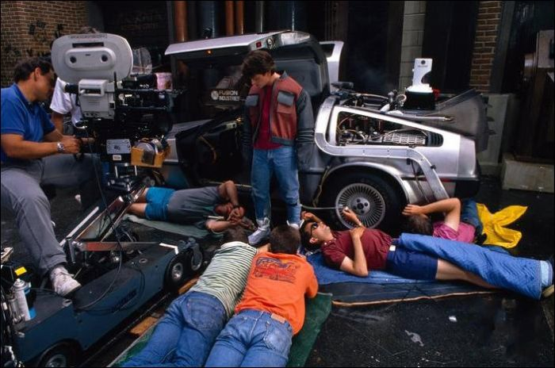
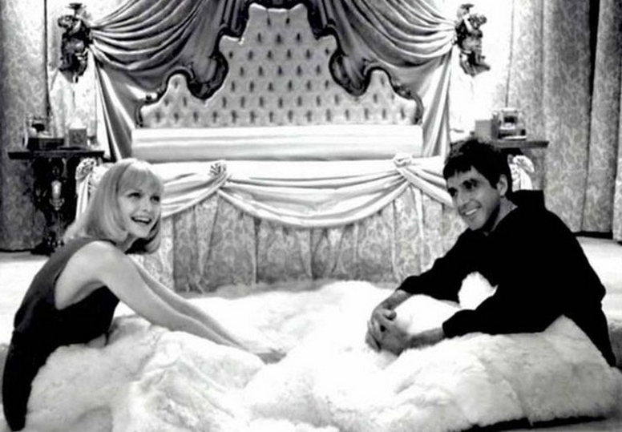
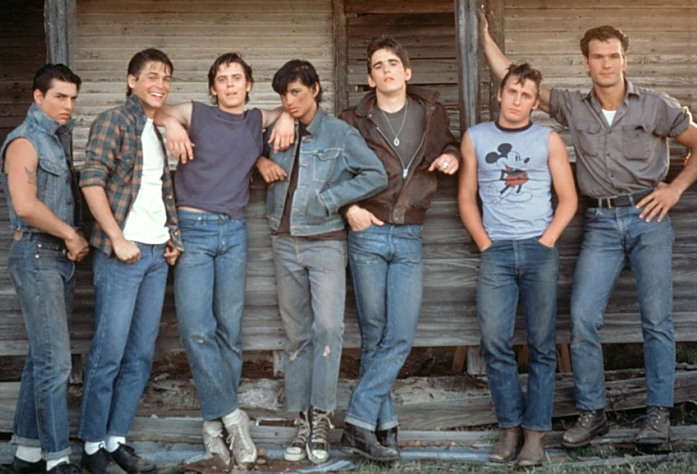
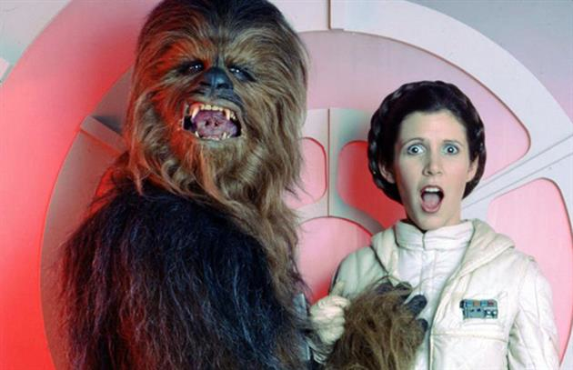
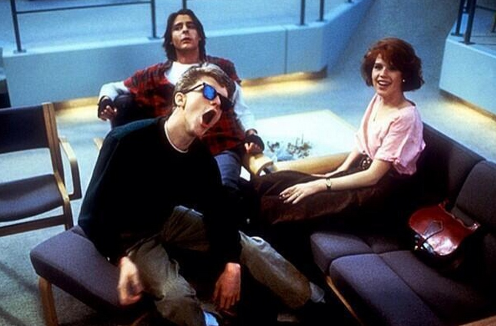

Fun Facts
(facts found from buzzfeed)
- In 'Back to the Future', the scene where lightning strikes the clock tower was added in order to save money, and it was not the original way Marty returned to 1985.
- Dolly Parton agreed to do '9 to 5' only if she wrote the theme song.
- Sixteen Candles actor Michael Schoeffling was 23 while his costars Molly Ringwald and Anthony Michael Hall were 15.
- In the moon scene from E.T., E.T. and Elliot are the only things that are not real.
- 'Red Dawn' was the first movie ever to be rated PG-13, in 1984.
- The song 'Your the Best' which is in the fight scenes during the tournament in the Karate Kid was actually written for 'Rocky III', but Rocky III ended up using 'Eye of the Tiger' instead.
- George Lucas hated when Harrison Ford said the iconic ad-libbed line "I know" in 'The Empire Strikes Back'.
- Tom Cruise improvised the entire dancing in his underwear scene in 'Risky Business'.
Movies on Hulu
- Footloose
- Heathers
- Spaceballs
- Back to School
- The Terminator
- Evil Dead 2
- Mad Max Beyond Thunderdome
- Mr. North
- Raging Bull
- Blue City
and more...
Movies on Amazon Prime
- St. Elmo's Fire
- About Last Night
- Steel Magnolias
- Back to School
- Footloose
- Heathers
- Girls Just Want to Have Fun
- The Stuff
- Fast Times at Ridgemont High
- Fright Night
- Top Gun
- Scary Stories
- Clue
- Labyrinth
- Bill & Ted's Excellent Adventure
- Beetlejuice
- The Breakfast Club
and more...
Movies on Netflix
- Back to the Future
- Back to the Future II
- Raiders of the Lost Ark
- The NeverEnding Story
- Bloodsport
- Airplane!
- Spaceballs
- Poltergeist
and more...
Behind the Scenes Photos from '80s Movies
(photos found from 'inktank')

Ferris Bueller's Day Off

Ghostbusters

Pretty in Pink

Back to the Future

Scarface

The Outsiders

The Empire Strikes Back

The Breakfast Club